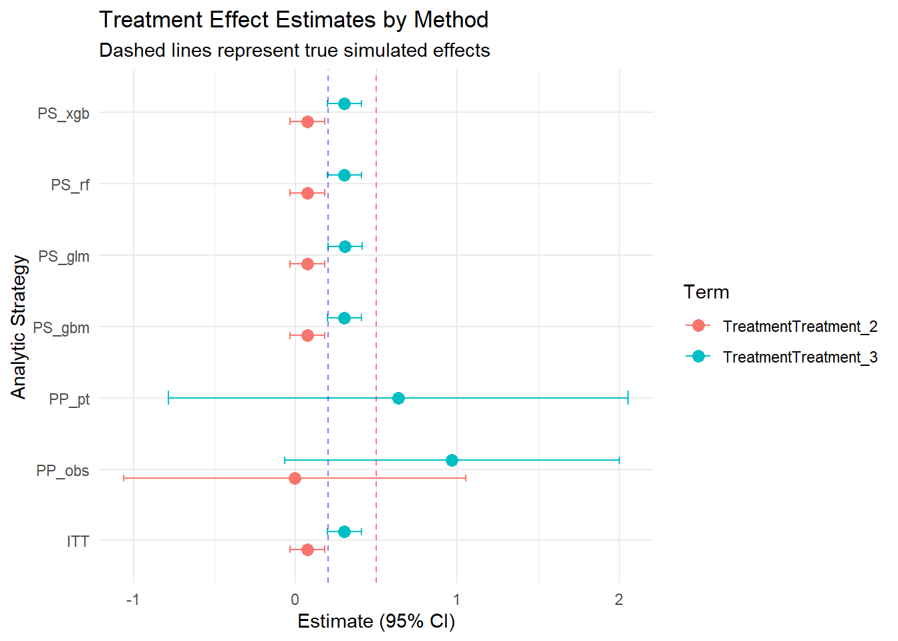

![]()
| Parameter | Value | |
|---|---|---|
| num_patients | num_patients | 1e+03 |
| num_visits | num_visits | 5e+00 |
| rho_uv | rho_uv | 5e-01 |
| adherence_intercept | adherence_intercept | -5e-01 |
| adherence_age | adherence_age | -1e-02 |
| adherence_male | adherence_male | -2e-01 |
| adherence_time_trend | adherence_time_trend | 1e-01 |
| adherence_lag_comp | adherence_lag_comp | 5e-01 |
| adherence_sd_subject | adherence_sd_subject | 8e-01 |
| outcome_intercept | outcome_intercept | 0e+00 |
| outcome_adherence | outcome_adherence | 1e+00 |
| outcome_time_trend | outcome_time_trend | 5e-02 |
| outcome_sd_subject | outcome_sd_subject | 5e-01 |
| outcome_sd_error | outcome_sd_error | 1e+00 |
| trt1_adherence_shift | trt1_adherence_shift | 0e+00 |
| trt2_adherence_shift | trt2_adherence_shift | -5e-01 |
| trt3_adherence_shift | trt3_adherence_shift | -1e+00 |
| trt1_outcome_effect | trt1_outcome_effect | 0e+00 |
| trt2_outcome_effect | trt2_outcome_effect | 2e-01 |
| trt3_outcome_effect | trt3_outcome_effect | 5e-01 |
Longitudinal Propensity Score Analysis: Method Comparison
1 Objective
This report compares treatment effect estimates across various analytic strategies: 1. Intent-to-Treat (ITT): All patients, all observations. 2. Per-Protocol (PP-pt): Patients with \(\ge 80\%\) average adherence. 3. Per-Protocol (PP-obs): Observations with \(\ge 80\%\) adherence. 4. Propensity Score (PS): Weighting by estimated probability of adherence using GLM, GBM, XGBoost, and Random Forest.
2 Simulation Parameters
The simulation was run with parameters loaded from simulation_params.xlsx:
3 Data Summary
| VisitNumber | N | Avg_Adherence | Percent_Compliant |
|---|---|---|---|
| 1 | 1000 | 0.1958333 | 0.1 |
| 2 | 1000 | 0.2116333 | 0.1 |
| 3 | 1000 | 0.2287333 | 0.2 |
| 4 | 1000 | 0.2416000 | 0.6 |
| 5 | 1000 | 0.2636000 | 0.7 |
4 Method Comparison
Below we compare the estimated treatment effects (Treatment 2 and Treatment 3 vs Treatment 1).
| Method | Term | Estimate | StdError | tValue | |
|---|---|---|---|---|---|
| TreatmentTreatment_2…1 | ITT | TreatmentTreatment_2 | 0.071 | 0.055 | 1.295 |
| TreatmentTreatment_2…2 | PP_obs | TreatmentTreatment_2 | -0.004 | 0.540 | -0.008 |
| TreatmentTreatment_2…3 | PS_gbm | TreatmentTreatment_2 | 0.072 | 0.055 | 1.311 |
| TreatmentTreatment_2…4 | PS_glm | TreatmentTreatment_2 | 0.073 | 0.055 | 1.322 |
| TreatmentTreatment_2…5 | PS_rf | TreatmentTreatment_2 | 0.071 | 0.055 | 1.310 |
| TreatmentTreatment_2…6 | PS_xgb | TreatmentTreatment_2 | 0.072 | 0.055 | 1.312 |
| TreatmentTreatment_3…7 | ITT | TreatmentTreatment_3 | 0.302 | 0.054 | 5.622 |
| TreatmentTreatment_3…8 | PP_obs | TreatmentTreatment_3 | 0.965 | 0.528 | 1.828 |
| TreatmentTreatment_3…9 | PP_pt | TreatmentTreatment_3 | 0.635 | 0.725 | 0.875 |
| TreatmentTreatment_3…10 | PS_gbm | TreatmentTreatment_3 | 0.301 | 0.054 | 5.623 |
| TreatmentTreatment_3…11 | PS_glm | TreatmentTreatment_3 | 0.305 | 0.054 | 5.661 |
| TreatmentTreatment_3…12 | PS_rf | TreatmentTreatment_3 | 0.301 | 0.054 | 5.625 |
| TreatmentTreatment_3…13 | PS_xgb | TreatmentTreatment_3 | 0.301 | 0.054 | 5.628 |
5 Visualizing Bias Reduction

6 Discussion
The results demonstrate the trade-offs between ITT and PP analyses. ITT tends to be attenuated towards the null due to non-adherence (dilution bias), while PP analyses can be biased away from the null due to non-random selection of patients. Propensity score weighted methods aim to recover the causal effect by adjusting for the selection mechanism.
```